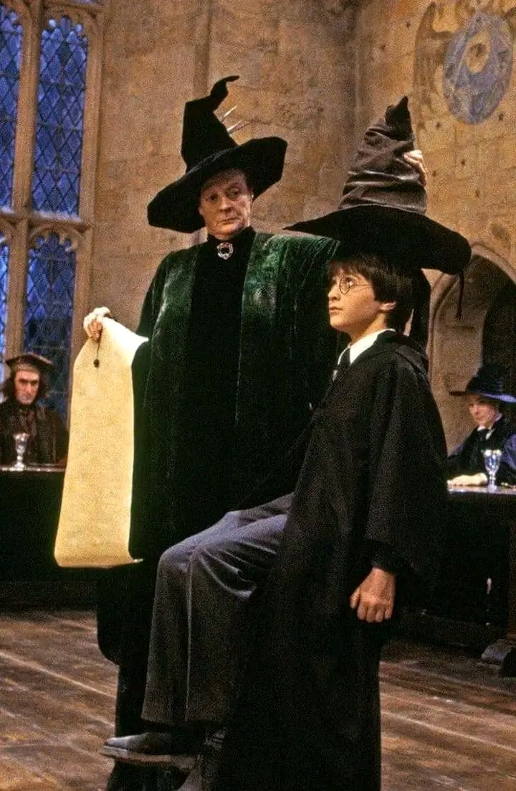
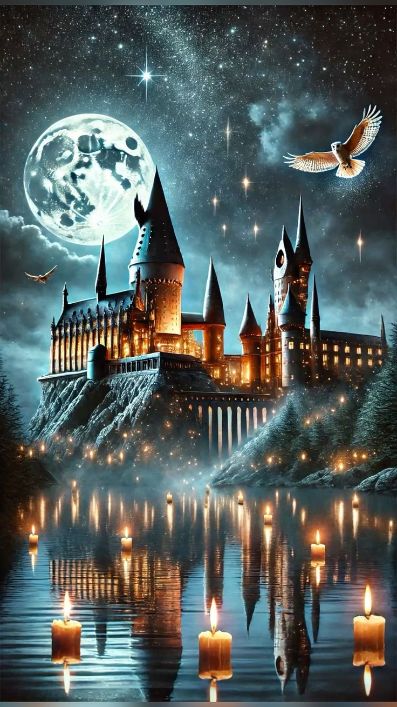
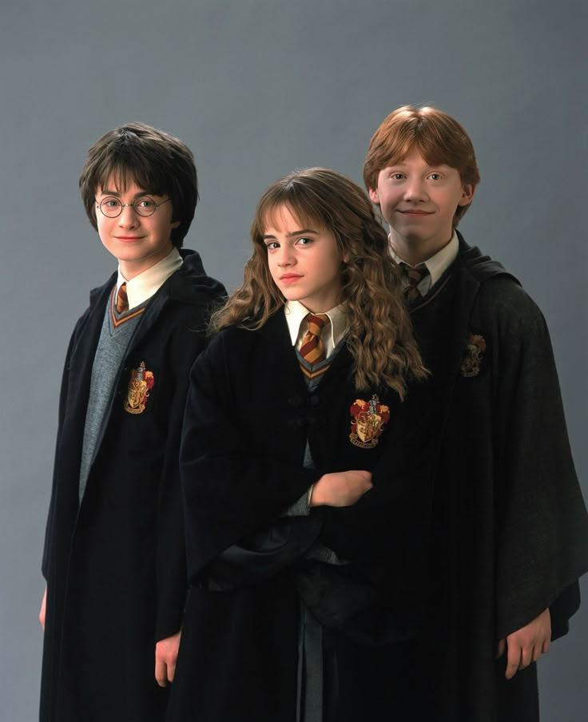
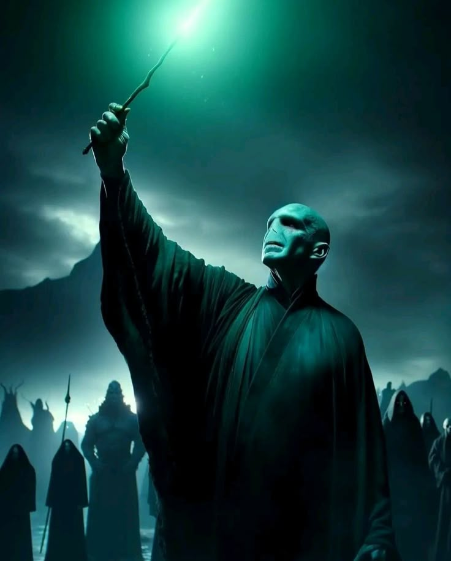
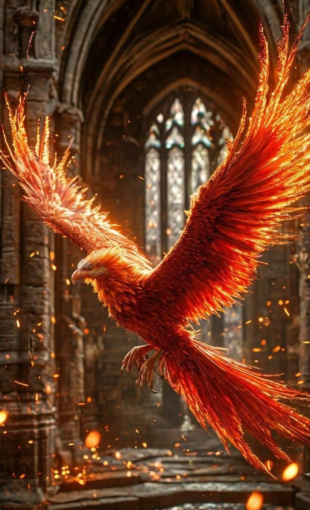
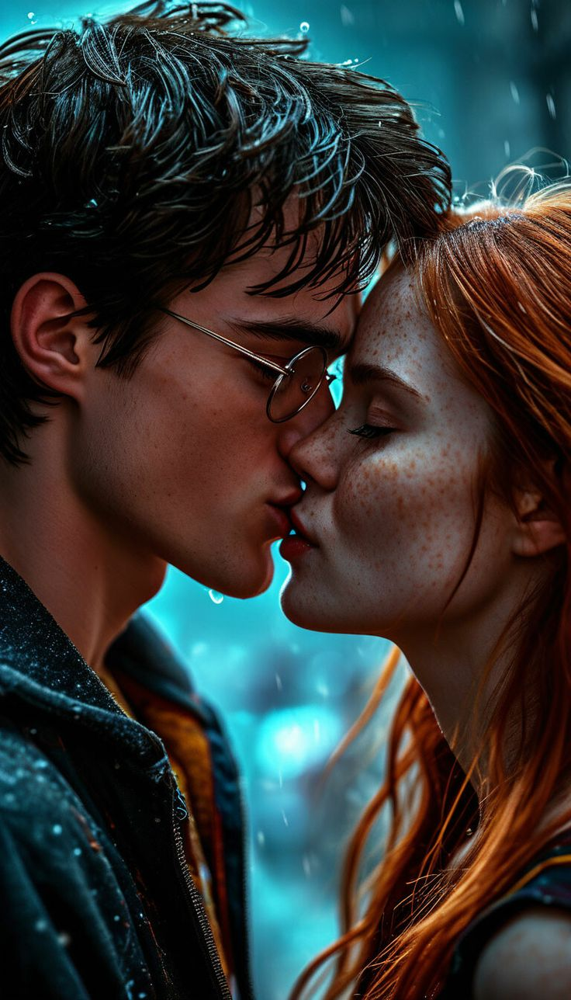
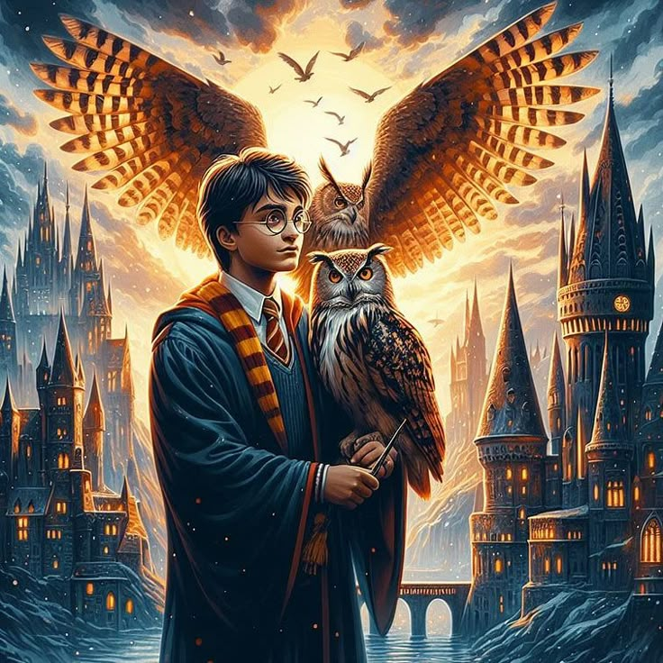
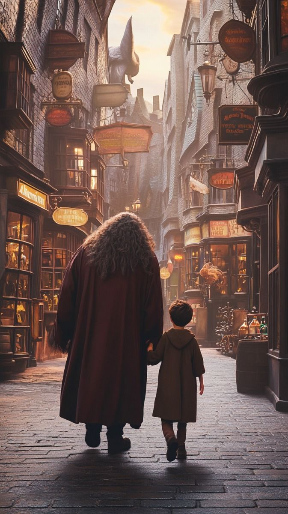

Основні моменти з життя
Дитинство: Гаррі народився 31 липня 1980 року. Після смерті батьків жив у родині Дурслів, де його принижували та змушували жити в комірчині під сходами.
Хогвартс: У 11 років Гаррі дізнався, що він чарівник. У Гоґвортсі він навчався 7 років, проявляючи мужність, лідерство та прагнення до справедливості. Його було розподілено до Ґрифіндору.
Друзі: Герміона Ґрейнджер та Рон Візлі стали його найкращими друзями. Разом вони пройшли через випробування, які зміцнили їхню дружбу.
Боротьба з Волдемортом: Гаррі був "обраним", щоб знищити Волдеморта. Йому довелося зіткнутись із смертю, втратами й болем. У фінальній битві при Гоґвортсі він переміг Темного Лорда, знищивши всі горокракси.
Орден Фенікса: Гаррі був активним учасником Ордену, що боровся проти Волдеморта. Він також створив "Дамблдорову Армію", щоб тренувати студентів для оборони від Темних мистецтв.
Стосунки: Гаррі закохався в Джіні Візлі — сестру Рона. Після війни вони одружилися.
Життя після війни: Гаррі став аврором у Міністерстві магії та допоміг реформувати систему магічного правосуддя.
Сім’я: У нього троє дітей — Джеймс Сіріус, Альбус Северус і Лілі Луна Поттер. Один із синів, Альбус, вступив до Слизерину, що стало несподіванкою.
Спадщина: Гаррі став символом надії та мужності в чарівному світі. Його історія надихає нові покоління магів.